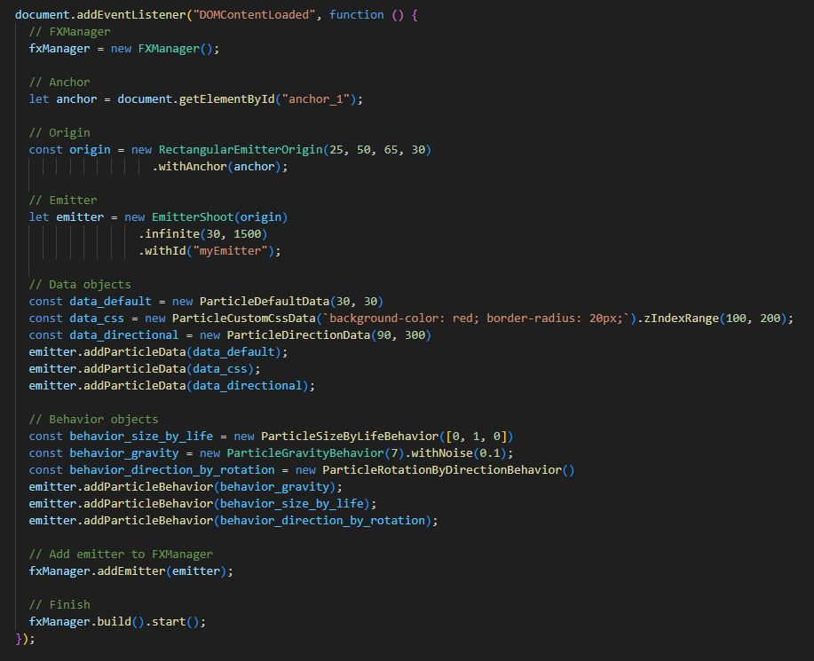
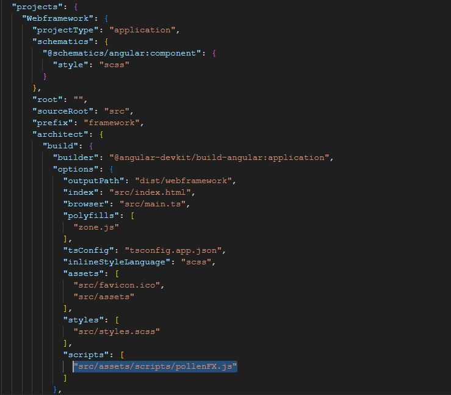
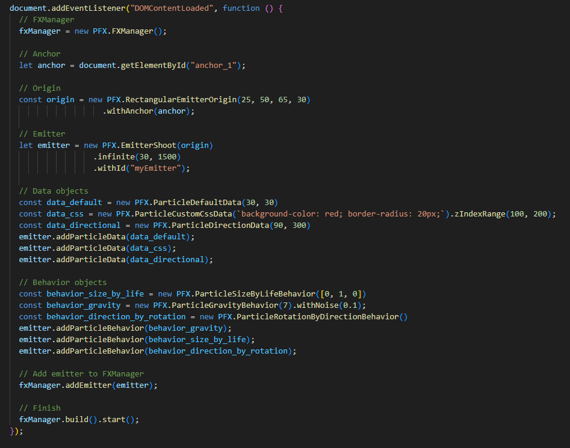
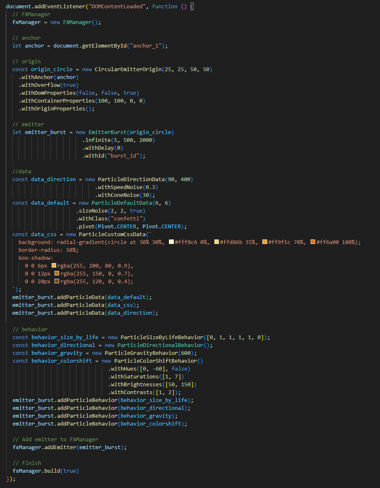

PollenFX | Particle Engine Beta | Documentation
1. INTRODUCTION
PollenFX is a lightweight, clientside, code-first, javascript based, DOM-oriented particle engine. It is used to create a wide variety of visually compelling particle effects within the browser. The tool consists of many different configuration components that allow the developer to dynamically assemble custom particle effects. The engine does not rely on any external css or javascript frameworks. In order to use PollenFX, one is expected to have minimal javascript knowledge, although the components are fairly simple and well documented along with code snippets and examples.
2. GENERAL OVERVIEW
To start working with PollenFX, an FXManager is first created. The FXManager can be seen as the root object of a particle system, managing multiple emitters. An FXManager could represent a campfire, managing its fire, smoke and spark emitters. Next, we retrieve the element we want to attach our particle effect to and pass that to an origin object, which defines the area in which particles can spawn. An emitter is then created, with this origin injected. Data objects & behavior objects are being created and passed on to the emitter in order to configure this emitter. The emitter is then inserted into the FXManager. The FXManager is then built and started. This covers the general workflow of PollenFX.

1. FXManager and Emitters
Best explained together are the FXManager and Emitters. An emitter is considered the manner in which
particles of the same type are being excreted. It is important to note that an
emitter will always create particles of the same type and with the same configuration. An example of this
would be
the way in which smoke
particles are generated one after the other. One could consider this to be a smoke 'emitter'.
Particle effects will in many cases be more complex than a singe emitter. A good analalogy would be a
campfire. When thinking about a campfire one could imagine the sparks, the smoke and the flames.
These three concepts will obviously behave differently, thus requiring three different emitters and this is
where the FXManager comes into play. The FXManager is a tool to bundle different emitters
in order to create one coherent particle effect. In the analogy described previously, an FXManager could
combine a smoke, spark and flame emitter, creating a fire particle effect. The creation and
different types of emitters will be explained further down.
2. Origins
Regardless of the type of emitter one picks, it is required to also configure an origin object. An origin
can be seen as an imaginary or invisible region of space in which particles are allowed
to spawn. Upon creation of an emitter, one is required to pass the origin object to the emitter for it to
function correctly.
3. Data objects
Data objects are objects that define a state or property of a particle. Examples of this would be rotation,
direction, customCSS, or opacity. These data objects apply a certain property to each particle
of an emitter, thus defining its 'state'.
4. Behavior objects
Behavior objects are objects that update or 'animate' the property of a data object over a certain period of
time. An emitter could be provided a rotation data object, setting the rotation state of the particles, or
it could be provided rotation behavior, which is going to update the rotation state of the rotation data
object over time, resulting in rotating particles. Note that you must not first provide a data object of a certain
type in order for its respective behavior object to function. This is handled internally.
3. FXMANAGER
As explained earlier, the FXManager is the core object of PollenFX, representing a coherent particle effect and managing its emitters. It is the only required object to create, as it can be used with default emitters and configurations, but it also offers a wide variety of configuration options and methods to manipulate the particle effect. The FXManager has a core loop which makes the particle effect run, and allows for custom logic to be injected into this core loop through a subscription method.
Constructor
An FXManager has no constructor fields.
Fluent initialization methods
.addEmitter(emitter: Emitter) (optional) Adds an emitter to the FXManager..build(start: boolean) Mandatory method to build the FXManager. By default it will also start the FXManager, but this start parameter can be overridden.
.start() Starts the FXManager, making the particle effect run.
.setDebug(debug: boolean) (optional) When set to true, both the emitterbox and origin will be rendered for debugging or development purposes.
.subscribe(subscription: void=>(nowTime, runtime, fxManager)) (optional) Allows you to subscribe with additional, custom logic to the FXManager's core loop.
.withAllowDOMOverflow(allowDOMOverflow: boolean) (optional) Defines whether particles will be hidden upon overflowing the body, or whether scrolling will be enabled. If for some reason one would need two FXManager objects, the last FXManager object created will define which allowDOMOverflow value will take action. Default = false which indicates that particles overflowing the body will not be visible.
Methods
.stop() Stops the FXManager, making the particle effect abruptly disappear..restart() Stops and starts the FXManager, making the particle effect restart.
.pause(gentle: boolean) Pauses the FXManager, making all particles pause. When gentle is set to false, all existing particles will freeze. When set to true, the existing particles will still continue, but no more particles will be spawned.
.pauseEmitter(id: string, gentle: boolean) The same as pause, but for a specified emitter.
.resume() Resumes after pausing.
.resumeEmitter(id: string) The same as resume, but for a specified emitter.
.getAverigeAliveParticleCount() Returns the amount of particles that will be alive at a certain time, on average for the whole of this FXManager.
.getCurrentAliveParticleCount() Returns the amount of particles that are currently alive for the whole of this FXManager.
.getEmitterById(id: string) Returns an emitter by id that was once provided to the FXManager.
.getFPS() Returns the current framerate in seconds.
.getActiveEmitters() Returns all the currently active, emitting emitters of the FXManager.
4. ORIGINS
An origin is considered an area in which particles can spawn and have to be passed on to a future emitter in order to function. There are four types of origins. It is important to note that an origin object can be provided with an optional anchor element. This is a html element to which the emitter and origin become attached. When no anchor is provided, this becomes the body, so make sure the DOM contains one. When the emitter recieves its origin object, this anchor element will be copied and set to mimic this anchor element. We refer to this copy as the emitterbox. This emitterbox can be interpreted as the container in which the origin objects reside.
1. CircularEmitterOrigin
Allows particles to spawn somewhere within an elliptical/circular area.
Constructor
posX Numeric value representing the center x coordinate of the circular/elliptical area.posY Numeric value representing the center y coordinate of the circular/elliptical area.
width Numeric value representing the width of the circular/elliptical area.
height Numeric value representing the height of the circular/elliptical area.
2. LineEmitterOrigin 
Allows particles to spawn at some point on, or around a defined line segment.
Constructor
posX Numeric value representing the x position coordinate of first point defining the line segment.posY Numeric value representing the y position coordinate of first point defining the line segment.
posX_2 Numeric value representing the x position coordinate of second point defining the line segment.
posY_2 Numeric value representing the y position coordinate of second point defining the line segment.
offset (optional) Numeric value which allows particles to spawn some distance or 'offset' away from the line segment, perpendicularly. Default = -1 and indicates no offset.
3. PointEmitterOrigin
Allows particles to come to life on a point.
Constructor
posX Numeric value representing the x position coordinate of the point defining where particles can spawn.posY Numeric value representing the y position coordinate of the point defining where particles can spawn.
4. RectangularEmitterOrigin 
Allows particles to come to life somewhere within a rectangular area.
Constructor
posX Numeric value representing the x position coordinate of the top left corner of the rectangular/square in which the particles can spawn.posY Numeric value representing the y position coordinate of the top left corner of the rectangular/square in which the particles can spawn.
width Numeric value representing width of the rectangular/square area.
height Numeric value representing height of the rectangular/square area.
Fluent, general origin initialisation methods
Regardless of the chosen origin type, all origins share the following fluent initialisation methods..withAnchor(anchorElement: HTMLElement) (optional) Sets a native HTMLElement object to which the origin is going to be attached. If initialized, the emitterbox will mimic this anchor element. Default = the body-element.
.withPositionNoise(posXNoise: number, posYNoise: number) (optional) Adds noise to any posX or posY parameter that the origin object manages. Default = -1.
.withOverflow(overflow: boolean) (optional) Boolean value defining whether the particles will be shown when they go beyond the bounds of its emitterbox. This is usually irrelevant for origins without anchorElement. Default = true and indicates visible overflow.
.withMimicShape(mimicShape: boolean) (optional) Boolean value defining whether the emitterbox is also going to get the same shape defining properties, such as border-radius as the anchor element.
.withDomProperties(includeMargin, includePadding, includeBorder) (optional)
* includeMargin:boolean Boolean value defining whether the emitterbox is also going to get the same margin as the anchor element applied or not. Procentual width,height,top and left will be calculated with margin in/excluded depending on this value. Default is false.
* includePadding:boolean Boolean value defining whether the emitterbox is also going to get the same padding as the anchor element applied or not. Procentual width,height,top and left will be calculated with padding in/excluded depending on this value. Default is true.
* includeBorder:boolean Boolean value defining whether the emitterbox is also going to get the same border as the anchor element applied or not. Procentual width,height,top and left will be calculated with border in/excluded depending on this value. Default is true.
.withContainerProperties(containerWidth, containerHeight, left, top, containerUnitWidth, containerUnitHeight, containerUnitPosX, containerUnitPosY) (optional)
* containerWidth: number (optional) Numeric value representing the width of the emitterbox, mimicing the anchorElement. The width value is expressed through the containerUnitWidth field. Default = 100.
* containerHeight: number (optional) Numeric value representing the height of the emitterbox, mimicing the anchorElement. The height value is expressed through the containerUnitHeight field. Default = 100.
* left: number (optional) Optional numeric value representing x-offset added to the emitterbox. The left value is expressed through the containerUnitPosX field. Default = 0.
* top: number (optional) Optional numeric value representing y-offset added to the emitterbox. The top value is expressed through the containerUnitPosY field. Default = 0.
* containerUnitWidth: PositionUnit (optional) A positionUnit enum value representing whether the 'width' value of this emitterbox should be expressed as a percentage of the anchorElement's width, absolutely in pixels, or as a css vw value. Read further for PositionUnit options. Default = PositionUnit.PERCENTAGE.
* containerUnitHeight: PositionUnit (optional) A positionUnit enum value representing whether the 'height' value of this emitterbox should be expressed as a percentage of the anchorElement's height, absolutely in pixels, or as a css vh value. Read further for PositionUnit options. Default = PositionUnit.PERCENTAGE.
* containerUnitPosX: PositionUnit (optional) A positionUnit enum value representing whether the 'left' value of this emitterbox should be expressed as a percentage of the anchorElement's width, absolutely in pixels, or as a css vw value. Default = PositionUnit.PIXEL.
* containerUnitPosY: PositionUnit (optional) A positionUnit enum value representing whether the 'top' value of this emitterbox should be expressed as a percentage of the anchorElement's height, absolutely in pixels, or as a css vw value. Default = PositionUnit.PIXEL.
5. EMITTERS
Emitters are considered the source from which particles are being 'emitted' and define the manner in which these particles are being excreted. There are two types of emitter; the burst-emitter and the shoot-emitter. In this section we will go over the different parameters one can configure.
1. EmitterShoot 
The EmitterShoot object is an emitter that emits particles one by one in a linear flow. This can last
indefinitely or be halted at some point. An example would be a dripping fosset.
Constructor
emitterOrigin The origin object that defines the area in which particles are allowed to be created.Fluent initialisation methods
Either .finite() or .infinite() must be called.
.finite(particleCount, emitterDuration, particleLifetime, particleLifetimeNoise)Initialisation method of a shoot emitter that has a certain duration.
* particleCount: number Numeric value representing the amount of particles that the emitter will emit over its emitterDuration.
* emitterDuration: number The time (in ms) over which the configured amount of particles will be spawned.
* particleLifetime: number Defines how long (in ms) particles will remain alive for.
* particleLifetimeNoise: number (optional) Numeric value which adds noise to the particleLifetime of each individual particle. Lower values yield better results. Default = -1 and indicates no noise.
.infinite(spawnIntervalTime, particleLifetime, particleLifetimeNoise)
Initialisation method of a shoot emitter that never ends.
* spawnIntervalTime: number Defines the time (in ms) between each particle spawn.
* particleLifetime: number Defines how long (in ms) particles will remain alive for.
* particleLifetimeNoise: number (optional) Numeric value which adds noise to the particleLifetime of each individual particle. Lower values yield better results. Default = -1 and indicates no noise.
2. EmitterBurst 
The EmitterBurst object is an emitter that releases all of its particle in one go. These bursts can go on
indefinitely or occur only once. An example would be a firework explosion.
Constructor
emitterOrigin The origin object that defines the area in which particles are allowed to be created.Fluent initialisation methods
Either .finite() or .infinite() must be called.
.finite(particleCount, burstCount, emitterDuration, particleLifetime, particleLifetimeNoise)Initialisation method of a burst emitter that has a certain duration.
* particleCount: number Numeric value representing the amount of particles that the emitter will burst.
* burstCount: numberNumeric value representing the amount of burst events that will occur, each containing as many particles as defined in particleCount.
* emitterDuration: number The time (in ms) over which the configured amount of bursts will be spawned.
* particleLifetime: number Defines how long (in ms) particles will remain alive for.
* particleLifetimeNoise: number (optional) Numeric value which adds noise to the particleLifetime of each individual particle. Lower values yield better results. Default = -1 and indicates no noise.
.infinite(particleCount, burstIntervalTime, particleLifetime, particleLifetimeNoise)
Initialisation method of a burst emitter that never ends.
* particleCount: number Numeric value representing the amount of particles that the emitter will burst.
* burstIntervalTime: number Define the time (in ms) between each burst event.
* particleLifetime: number Defines how long (in ms) particles will remain alive for.
* particleLifetimeNoise: number (optional) Numeric value which adds noise to the particleLifetime of each individual particle. Lower values yield better results. Default = -1 and indicates no noise.
Fluent, general emitter initialisation methods
.addParticleData(particleData: ParticleData) (optional) Adds particle data to the emitter..addParticleBehavior(particleBehavior: ParticleBehavior) (optional) Adds particle behavior to the emitter.
.withDelay(delay: number) (optional) Defines an optional delay (in ms) before the emitter will start. Default = -1 and indicates no delay.
.pause(gentle: boolean) (optional) Pauses the emitter. If true is provided for the gentle field, the remaining particles will proceed to live on, but no new particles will spawn. If false is provided, all particles will freeze.
.resume() (optional) Resumes the emitter.
General emitter methods
.getAverigeAliveParticleCount() Returns the amount of particles that will be alive on average for this emitter..getCurrentAliveParticleCount() Returns the amount of particles that are currently alive for this emitter.
6. DATA OBJECTS
A data object defines a certain property of each particle within an emitter. A data object without respective behavior object represents its fixed state for that property. Adding a behavior object of that respective data object, means that the data object defines its initial state for that property, to then be altered over time by the behavior object.
1. ParticleDefaultData
In order for a particle to just be shown, it requires at least two properties; position and size. This is
what the ParticleDefaultData object prescribes.
Constructor
width Numeric value defining the width (in pixels) of the particle.height Numeric value defining the height (in pixels) of the particle.
Fluent initialisation methods
.sizeNoise(noiseWidth: number, noiseHeight: number, uniformSizeWidth: boolean) (optional) Numeric values which adds/subtracts random noise to the width and height properties in order to apply randomness to its dimensions. Lower values yield better results. Default = -1 and indicates no noise. UniformSizeWidth is a boolean value defining whether the optionally added size noise, if provided, should always keep the sizing uniform. If true, the noiseWidth value will be taken as a reference. Default is false, indicating that a non-uniform sizing is allowed..pivot(horizontalPivot: Pivot, verticalPivot: Pivot) (optional) Pivot enum values defining where the pivot point lies, horizontally and vertically in defining the origin of the particle. Default = Pivot.CENTER.
.withClass(particleBoxClass: string) (optional) Adds a custom class to each particle element.
2. ParticleCustomCSSData
The ParticleCustomCSSData allows for custom css stylerules to be added to each particle within an
emitter.
Constructor
customCssObject String value containing n css stylerules, applied to all particles within the emitter. Beware that each stylerule within this string should end width a semicolon.Fluent initialisation methods
.zIndex(zIndex: number) (optional) Applies a fixed zIndex to the particles..zIndexRange(minZIndex: number, maxZIndex: number) (optional) Applies a random zIndex to the particles within the provided zIndex range.
3. ParticleDirectionData 
The ParticleDirectionData defines the direction and speed of the particles of an emitter. Because this is
a
data object, this object by itself won't do anything. It is however
altered by many Behavioral objects and serves as an initial state of direction and speed when being
altered
by these behavioral objects.
Constructor
directionAngle Numeric value which defines (in degrees) the direction particles should move toward.speed Numeric value which defines the speed by which the particles move in the direction of the provided directionAngle parameter.
Fluent initialisation methods
.withSpeedNoise(speedNoise: number) (optional) Numeric value which adds noise/random offset to the speed parameter. Smaller values yield better results. Default = -1 and indicates no speedNoise..withConeNoise(coneNoise: number) (optional) Numeric value which adds an imaginary cone (in degrees) around the directionAngle overriding the directionAngle field by a random angle within this cone. Default = -1 and indicates no coneNoise.
4. ParticleRotationData 
The ParticleRotationData object defines the rotation property of the particles spawned from an
emitter.
Constructor
rotation Numeric value which defines (in degrees) the amount of rotation a particle must have.coneNoise (Optional) Numeric value which adds an imaginary cone (in degrees) around the rotation angle and randomizes the rotation value by a random angle within this cone. Default = -1 and means no randomization.
randomization.
Fluent initialisation methods
.withAllowMirrored(mirrorX: boolean, mirrorY: boolean) (optional) Allows for random horizonal or vertical particle element mirroring to add further randomness.
5. ParticleOpacityData
The ParticleOpacityData object defines the transparency of each particle.
Constructor
opacity Numeric value defining the transparency/opacity of the particles of the emitter. Values are meaningful between [0,1].opacityNoise (Optional) Numeric value which adds noise/random offset to the opacity parameter. Smaller values yield better results. Default = -1 and indicates no opacityNoise.
6. ParticleImageData 
The ParticleImageData object allows for particles to be presented as an image.
Constructor
url String value representing the URL to the image.imgWidth (optional) Numeric value representing the physical width of the image file in px. Providing this value might increase performance. Default = -1 and indicates auto-calculation.
imgHeight (optional) Numeric value representing the physical height of the image file in px. Providing this value might increase performance. Default = -1 and indicates auto-calculation.
Fluent initialisation methods
.withImageFitting(imageFitting: ImageFitting) (optional) The ImageFitting enum value defines how the image is applied to the particle div element and should usually not be altered. Default = ImageFitting.FIT.
7. ParticleFlipbookData 
The ParticleFlipbookData object allows for spritesheets/flipbooks to be applied to the particle through
which is being flipped in order to display an animation. This data object should be used along with
ParticleFlipbookBehavior, in order to to achieve a meaningful animation.
Constructor
url String value representing the URL to the image.imgWidth (optional) Numeric value representing the physical width of the image file in px. Providing this value might increase performance. Default = -1 and indicates auto-calculation.
imgHeight (optional) Numeric value representing the physical height of the image file in px. Providing this value might increase performance. Default = -1 and indicates auto-calculation.
frameCountX Numeric value representing the amount of images within the provided spritesheet over the x axis.
frameCountY Numeric value representing the amount of images within the provided spritesheet over the y axis.
startFrame (optional) Numeric value representing at which frame index of the spritesheet the animation should start. Default = -1 and indicates the first frame.
Fluent initialisation methods
.withImageFitting(imageFitting: ImageFitting) (optional) The ImageFitting enum value defines how the image is applied to the particle div element and should usually not be altered. Default = ImageFitting.FIT.
8. ParticleColorfilterData (experimental)
The ParticleColorfilterData object allows for altering or adding color to the look of the particle as well
as
modifying hue, saturation and brightness. This is an experimental component. Be aware that some cases might
yield odd results.
Constructor
A ParticleColorfilterData has no constructor fields.
Fluent initialisation methods
.withColor(color: string) (optional) A Color object being overlayed ontop of the particle functioning as a colored filter. Due to difficult color calculations on greyscale images/colors, there might be a slight offset in hue, saturation and brightness. However, this offset can be accounted for by providing an offsetted color, or tweaking the hue, saturation and brightness values. You will notice that by only applying color, you wont have much control over saturation and brightness that comes from the color object. Default = null and indicates no color..withHue(hueRotate:number, noise:number) (optional) hueRotate is a numeric value representing the amount (in degrees) of hue shifting that must occur to the particle's appearance. Default = 0 and indicates no hue-shift. Noise is a random offset/noise that will be applied to the hueRotate field. Smaller values yield better results in this case. Default = -1 and indicates no noise.
.withSaturation(saturation: number) (optional) Numeric value that alters the saturation of the appearance of the particles. Beware that this value takes effect on the provided base color/image so lower values [0,2] are most meaningful. However, values between [0,100] are valid. Default = -1 and indicates no altered saturation.
.withBrightness(brightness: number) (optional) Numeric value that alters the brightness of the appearance of the particles. Values between [0,1000] are valid. Default = -1 and indicates no altered brightness.
.withContrast(contrast: number) (optional) Numeric value that alters the contrast of the appearance of the particles. Values between [0,100] are valid. Default = -1 and indicates no contrast alterations.
7. BEHAVIOR OBJECTS
Behavior objects are objects that describe the continuous updating or animating of a certain property that a particle expresses. Each behavior type acts on its corresponding data object. For example, ParticleFlipbookBehavior acts on ParticleFlipbookData and ParticleDirectionalBehavior acts on ParticleDirectionData.
1. ParticleDirectionalBehavior 
The ParticleDirectionalBehavior allows for particle movement in a certain direction. It acts on the
ParticleDefaultData and has no constructor parameters as all data it requires
is already stored in the data object. It does however still need to be created and applied to the
emitter.
Constructor
A ParticleDirectionalBehavior has no constructor fields.
2. ParticleSizeByLifeBehavior
This behavioral type allows for gradual changes in size over the lifetime of the particles and acts upon
ParticleDefaultData.
Constructor
sizeMultipliersX An array of numbers representing the scalars through which the particle is going interpolate over its lifetime/provided duration and multiply as a scalar to its width defined in the ParticleDefaultData.sizeMultipliersY An array of numbers representing the scalars through which the particle is going interpolate over its lifetime/provided duration and multiply as a scalar to its height defined in the ParticleDefaultData.
Fluent initialisation methods
.withDuration(duration: number, sizeIterationCount: number) (optional) Duration is a numeric value indicating the Time (in ms) it should take for the particle to run through the sizeMuliplier lists once. Default = -1, meaning that it runs through those size lists once during its lifetime. sizeIterationCount is a numeric value which allows for a forced halt in running through the sizeMuliplier lists after having passed x numbers in those lists. It then remains the size where it halted. Default = -1 and means that no halting should occur..withNoise(scalarNoise: number, uniformNoise: boolean) (optional) scalarNoise is a numeric value which adds noise/random offset to the sizeMuliplier lists. Smaller values yield better results. Default = -1 and indicates no noise. uniformNoise is a boolean value defining whether the scalarNoise, if provided, should scale both lists uniformly. Beware that this parameter can yield odd results for sizeMuliplier lists of unequal length.
3. ParticleGravityBehavior 
The ParticleGravityBehavior allows for adding gravity and acts upon ParticleDefaultData.
Constructor
fieldStrength Numeric value representing the force by which the particles are being pulled downwards. Negative values allow for inverted gravity.Fluent initialisation methods
.withNoise(noise: number) (optional) Numeric value which adds noise/random offset to the fieldStrength parameter. Smaller values yield better results. Default = -1 and indicates no noise.
4. ParticleRotationBehavior 
Defines how the particles should be rotating or 'spinning'. This behavior object acts on
the ParticleRotationData.
Constructor
rotation Numeric value representing the speed by which the particle should rotate. Positive values yield counter clockwise rotation.Fluent initialisation methods
.withNoise(rotationNoise: number, allowReverse: boolean) (optional) RotationNoise is a numeric value which adds noise/random offset to the rotation parameter. Lower values yield better results. Default = -1 and means no noise is being added. AllowReverse is a boolean value defining whether the rotationNoise is allowed to invert the rotation direction. Default = true.
5. ParticleOpacityByLifeBehavior
The ParticleOpacityByLifeBehavior allows for alteration in the particle's opacity over time. It acts upon
the ParticleOpacityData object.
Constructor
opacityMultipliers An array of numbers between [0,1] representing the scalars through which the particle is going interpolate and multiply with its opacity value defined in the ParticleOpacityData.Fluent initialisation methods
.withNoise(opacityNoise: number) (optional) Numeric value whichn adds noise/random offset to the opacityMultipliers. Smaller values yield better results. Default = -1 and indicates no randomness..withDuration(duration: number, opacityIterationCount: number) (optional) Duration is a numeric value representing the time (in ms) it should take for the particle to run through the opacityMultipliers once. Default = -1 and indicates that it runs through the opacity list once during its lifetime. opacityIterationCount is a numeric value which allows for a forced halt in running through the opacityMultipliers after having passed x numbers in this opacity list. It then remains the opacity value where it halted. Default = -1 and indicates no halting.
6. ParticleWindBehavior 
The ParticleWindBehavior object allows to mimic the effects of wind. It allows just like
directionalbehavior
for movement to the particle, but the wind behavior allows for wavey movement.
It acts upon the ParticleDefaultData.
Constructor
angles A numeric array of angles (in degrees) representing the angles towards the wind blows and through which the particles are going interpolate and be blown towards.windSpeed (optional) Numeric value representing the power/windspeed by which the wind will blow towards the direction the particle is currently at in its angles list. Default = 1.
Fluent initialisation methods
.randomizeShallow(shallowRandom: boolean) (optional) Boolean value that if true, randomizes each angle by a new random angle between its provided neighbouring angles. Default = false..randomizeDeep(deepRandom: boolean) (optional) Boolean value that if true, randomizes all angles by an angle between the biggest and smallest angle provided in the angles list. Default = false.
.withDuration(cycleDuration: number) (optional) Numeric value representing the time (in ms) it should take for the particle to run through the angles list once. Default = -1 and means that it runs through it once during its lifetime.
.withInitialDirection(considerDefault: boolean, overrideInitialDirection: boolean) (optional) ConsiderDefault is a boolean value that if true, the initial direction as defined in the ParticleDirectionData will not be discarded. Default = false. OverrideInitialDirection is a boolean value that if true, the initial direction as defined in the ParticleDirectionData is overridden by the first angle in the angle list. If false, the initial direction will be appended to the angles list. Note that this parameter is only valid when the considerDefault parameter is true. Default = false.
7. ParticleColorShiftBehavior (Experimental) 
The ParticleColorShiftBehavior allows for a gradual change in what the ColorFilterData only initializes
once, when it comes to hue, saturation, brightness and contrast. This behavior object acts on the
ColorFilterData. This is an experimental component and some configurations might yield odd results. This
component can be used alongside the ParticleColorfilterBehavior in order to
tweak results.
Constructor
A ParticleColorShiftBehavior has no constructor fields.
Fluent initialisation methods
.withDuration(duration: number) (optional) A numeric value describing the duration over which these transformations are supposed to occur. Default = -1 and indicates that the transformations will occur over the lifetime of the particle..withHues(hues: number[], forceForwardHue: boolean) (optional) Hues are a numeric array of hue-values between [0,360] through which the particles are going interpolate and an updates value is going to be assigned to the ColorFilterData. Beware that These updates hues are going to be added/subtracted from what was already configured in the ColorFilterData. Given that hue is expressed as an angle, this forceForwardHue boolean value will make sure a hue shift from 290 to 30 will not count downwards, but internally upwards from 290 to 360+30. Default = true and indicates an upwards shift only.
.withContrasts(contrasts: number[]) (optional) A numeric array of contrast-values between [0,100] through which the particles are going interpolate and take on this interpolated contrast value for each moment in time over its life. Smaller values [0,2] yield better results.
.withSaturations(saturations: number[]) (optional) A numeric array of saturation-values between [0,100] through which the particles are going interpolate and take on this interpolated saturation value for each moment in time over its life. Smaller values [0,2] yield better results.
.withBrightnesses(brightnesses: number[]) (optional) A numeric array of brightness-values between [0,1000] through which the particles are going interpolate and take on this interpolated brightness value for each moment in time over its life. Smaller values [0,2] yield better results.
8. ParticleColorfilterBehavior (Experimental)
The ParticleColorfilterBehavior allows for a gradual change in what the ColorFilterData only initializes
once, when it comes to color. This behavior object acts on the ColorFilterData. This is an experimental
component, and when it
comes to providing colors, there might be some incorrect offset occuring due to difficult css color
calculations upon
already colored surfaces. These values can be tweaked using the ParticleColorShiftBehavior.
Constructor
colors An array of hex-string colors through which the particles are going interpolate and take on this interpolated color overlay for each moment in time over its life.Fluent initialisation methods
.withRandomStartColor(randomStartColor: boolean) (optional) Boolean value defining whether a random color from the colors list is being taken to start from. Default = false and indicates no randomisation..withDuration(duration: number, colorIterationCount: number) (optional) Duration is a numeric value representing the time (in ms) it should take for the particle to run through the colors once. Default = -1 and means that it runs through those colors once during its lifetime. ColorIterationCount Allows for a forced halt in running through the colors after having passed n colors in this list. It then remains the color value where it halted. Default = -1 and indicates no halting.
.withStartIndex(startIndex: number) (optional) Similar to randomStartColor, the color at this index will be taken as start color. Default = -1 and means the first color.
9. ParticleFlipbookBehavior 
The ParticleFlipbookBehavior object allows flipping through the provided spritesheet in the provided
ParticleFlipbookData object in order to display an animation.
Constructor
speed Numeric value representing the time (in ms) between each frame jump.Fluent initialisation methods
.withEndingFrame(endingFrameCount: number) (optional) Numeric value which allows for a forced halt in running through the spritesheet frames after having passed n frames in the image. It then remains stuck on the frame where it halted. Default = -1 and indicates no halting..withNoise(speedNoise: number) (optional) Numeric value which adds randomness/noise to the speed parameter. Lower values yield better results. Default = -1 and indicates no randomness.
10. ParticleRotationByDirectionBehavior 
This behavior object allows the rotation to always be set to match the direction that the particle is
going towards. The object acts on
the rotation data object and does not function in combination with the ParticleRotationBehavior.
Constructor
offset (optional) Numeric value which adds an additional offset (in degrees) to the rotation which is being matched to the particle's direction. Default = -1 and indicates no offset.
11. ParticleSpiralBehavior
This behavior object allows the direction of each particle to be outwards of the center of its origin, in a
rotation fashion, giving it the appearance
of a spiral
Constructor
msPerRotation (optional) Numeric value representing the duration in ms it takes to spiral a full 360 degrees.randomRotationDirection (optional) Boolean value, which if true, randomizes the spiraling direction
Fluent initialisation methods
.withSpeedNoise(msPerRotationNoise: number) (optional) Numeric value which adds randomness/noise to the msPerRotationNoise parameter. Lower values yield better results. Default = -1 and indicates no randomness..withRandomStartRotation(randomStartRotation: boolean) Boolean value that, if true, randomizes the start rotation of the spiral
.withStartRotationNoise(startRotationNoise: number) Numeric value that, if set, adds offset to the initial spiral rotation as defined in the ParticleDirectionData.
8. PIVOT, POSITIONUNIT, IMAGEFITTING
There are several constants that are worth adressing. These are Pivot, PositionUnit and ImageFitting. These are enums that hold constant values and are sometimes required during configuration of data objects and or behavioral objects.
1. Pivot
When a Pivot enum is required, this will allow the user to configure the pivotpoint of the particle. For
example, a pivot placed in the bottom-right corner will scale the particle outwards to the upper left
corner
when scaling.
Pivot.BEGIN Means either top, or very left border of the particle
container.
Pivot.CENTER Means either vertical, or horizontal center of the particle
container.
Pivot.END Means either bottom, or very right end of the particle
container.
2. PositionUnit
When working with positions or dimensions, we sometimes want this to be expressed as a proportion of its
parent, the document or in absolute pixels.
PositionUnit.PERCENTAGE Refers to an expression as a percentage of its
parent. The css equivalent of this would be '%'.
PositionUnit.PIXEL Refers to an absolute value in pixels. The css
equivalent of this would be 'px'.
PositionUnit.VIEW_WIDTH Refers to an expression as a percentage of the
screen width. The css equivalent of this would be 'vw'.
PositionUnit.VIEW_HEIGHT Refers to an expression as a percentage of the
screen height. The css equivalent of this would be 'vh'.
PositionUnit.VIEW Both VIEW_WIDTH and VIEW_HEIGHT combined when there is
no distinction allowed between the two.
3. ImageFitting
When working with images, it can be useful to specify how the image has to be applied to the particle.
These
directly entail a css stylerule.
ImageFitting.COVER Represents the background-size : "cover" css
property.
ImageFitting.FIT Represents the background-size : "100% 100%" css
property.
ImageFitting.CONTAIN Represents the background-size : "contain" css
property.
9. ANGULAR COMPATIBILITY
1. Angular compatibility
Given that this library is written in plain javascript, one might
need to make a slight adjustment in order to use it in a framework such as angular
1. Add the script to your project.
2. Add a reference to the script in your angular.json file as shown below:

3. In the component in which you wish to use PollenFX, add a reference to PFX, declaring its existance.

4. From now on, the engine can be used, albeit with every object taken from the PFX constant.

10. TIPS & TRICKS
1. Anchor choice
When choosing an element to function as an anchor, it is
recommended to make a dedicated div element. Obscure, non-div
elements might yield unwanted results.
2. Anchor styling
It is recommended to not pick an anchorelement with lots of
exotic styling applied to it or that is positioned relative/absolute. Doing this
could yield unwanted results.
3. Cascading css
Ultimately, particle effects are just transformed divs, so
beware of any cascading css. These might ruin the
particle configurations due to cascading styling.
4. PollenFX script inclusion
When linking to the pollenFX script in order to
use it, make sure it is inserted above the script in which you
are going to use it.
11. EXTENSIVE CODE SNIPPET
Finally, here is a more in-depth example of the creation of a particle effect. Beware that the examples below might make use of resources such as images that are not provided in the demos.
